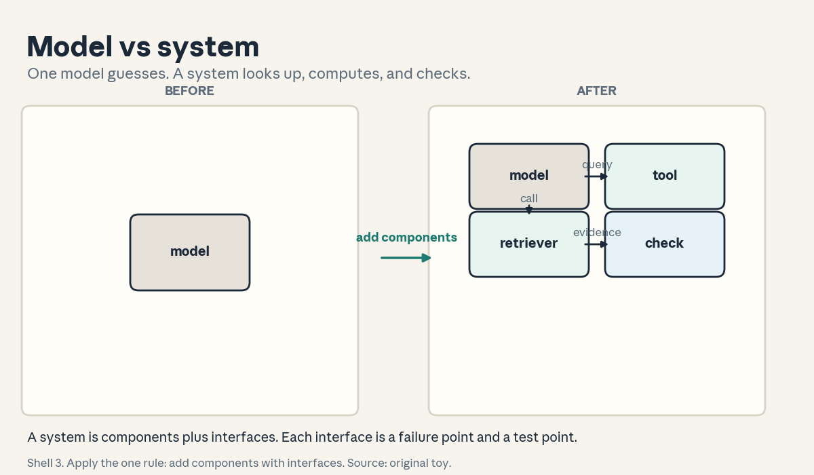
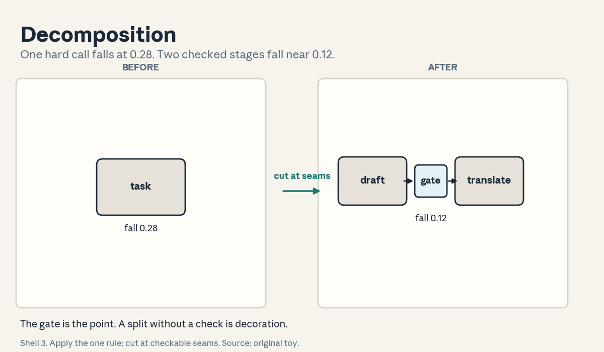
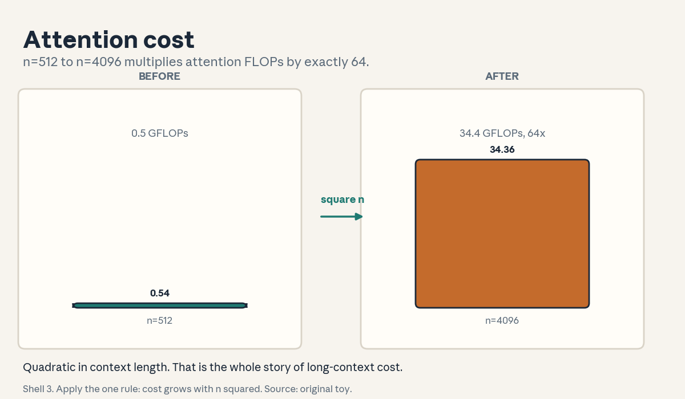
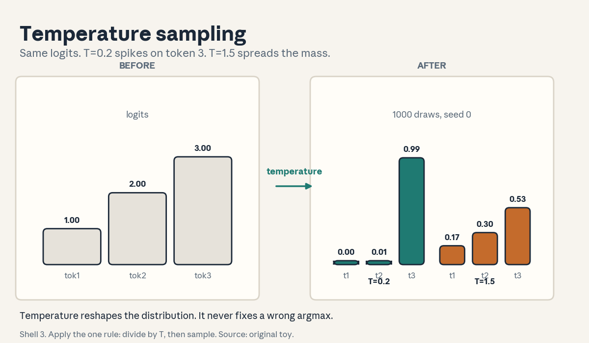
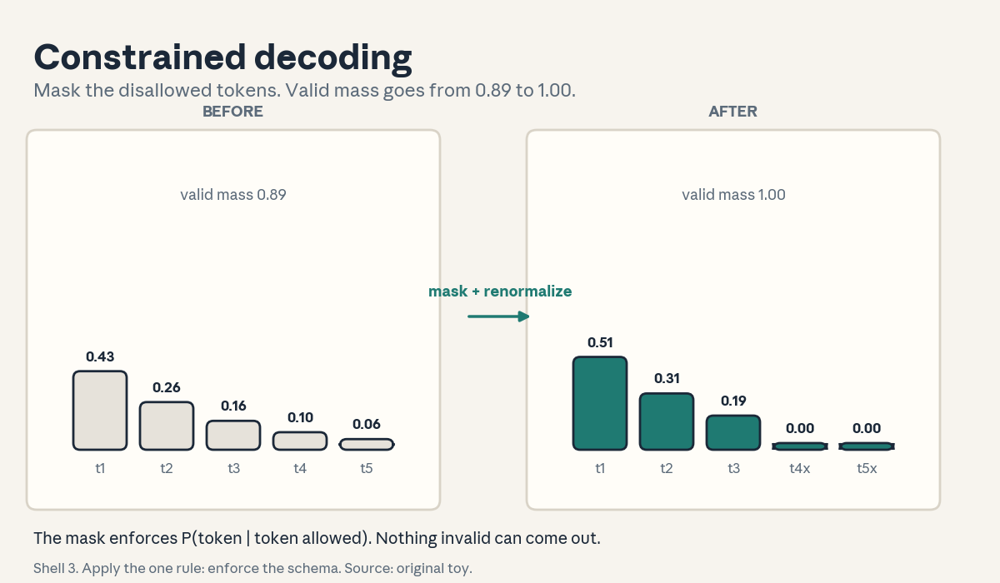
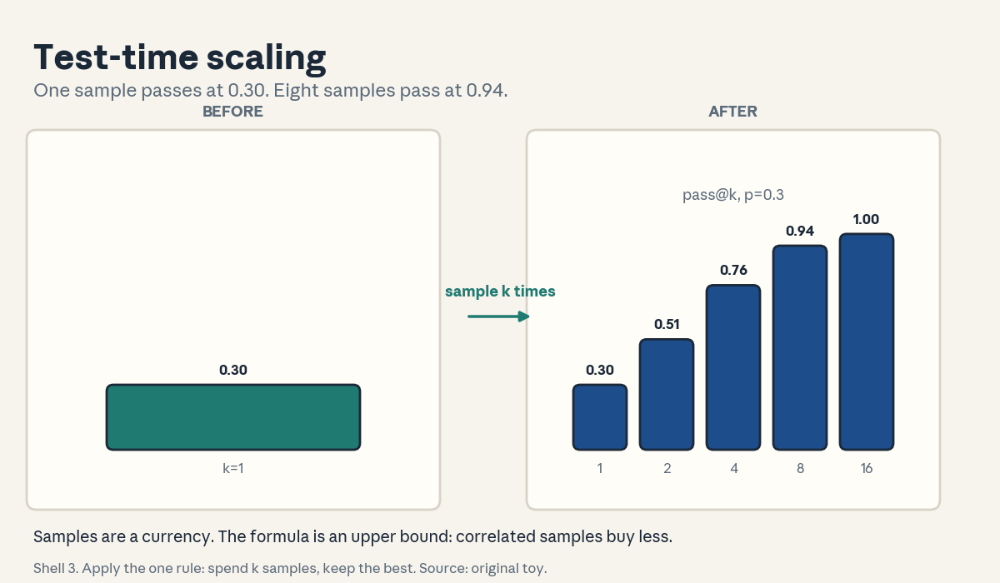

U01 · Compound systems and LLM foundations
U01: Compound systems and LLM foundations
Prerequisites: P10 (ML foundations), P14 (transformer), P20 (tools). Local remediation opens this lesson.
Provenance
Concepts C01-C03 map to session S01, “Foundations session” (23 Sep 2026): source-supported at schedule-title level (schedule inspected. Slide deck not opened). Concepts C04-C10 map to session S02, “LLMs for Builders” (28 Sep 2026): source-supported at schedule-title level. Concepts C11-C12 are requested extensions: PLANNED / SOURCE ATTRIBUTION PENDING, taught as independent theory. The workflows-vs-agents framing in C02/C11 follows the Anthropic “Building Effective Agents” article (SRC-04, inspected full).
Local remediation: logits, softmax, and attention cost
A language model outputs logits z in R^V, one real number per vocabulary token. Softmax turns logits into probabilities: p_i = exp(z_i / T) / sum_j exp(z_j / T), with temperature T > 0. At T = 1 this is plain softmax. As T approaches 0 the distribution sharpens toward the argmax. As T grows the distribution flattens toward uniform. Every sampling decision in U01 is an operation on this vector.
Attention cost: for context length n and model width d, one attention layer forms an (n, n) score matrix from (n, d) queries and keys. The two matrix products (scores, then scores times values) each cost O(n^2 d). With L layers the forward pass costs O(L n^2 d). Memory for the KV cache is 2 L n d scalars (keys plus values). These two scalings explain every cost claim in C04 and C06.
Training versus inference: pretraining minimizes next-token loss on a corpus. Inference runs the trained weights on a new prompt. Post-training changes behavior with new objectives on new data. The lesson keeps these three regimes separate.
Russian-doll ladder for the major mechanism (temperature sampling)
- Shell 0: How do we turn one fixed logit vector into token choices with controllable randomness?
- Shell 1: Toy: logits [1.0, 2.0, 3.0]. Three tokens, three numbers, one temperature knob.
- Shell 2: z in R^3, T scalar, p = softmax(z / T). Greedy choice = argmax p.
- Shell 3: Rule: divide by T, exponentiate, normalize, sample. Lower T concentrates mass on the top logit.
- Shell 4: Derive the limit T -> 0 gives probability 1 on the argmax. Implement a sampler in NumPy.
- Shell 5: Check: probabilities sum to 1 for T in {0.1, 1, 10}. At T = 1 the toy gives [0.09, 0.24, 0.67].
- Shell 6: Change one factor: raise T from 1 to 3. Predict flattening, measure entropy rise from 0.83 to 1.06 nats.
- Shell 7: Counterexample: tied top logits [2.0, 2.0, 0.0] at T -> 0. The argmax is not unique. The tie-break is arbitrary.
- Shell 8: Compare with top-k truncation (k = 2) under the same logits. Temperature reshapes. Top-k cuts.
- Shell 9: Extension: does the optimal T for pass@8 differ between math and code tasks? Falsifiable: sweep T on two fixed toy evals and compare the argmax.
- Shell 10: Production: low T gives deterministic, debuggable serving. High T gives diverse samples for voting. The stakeholder decision is the latency cost of k samples.
Not-yet-understood dependency list
- Why attention divides by sqrt(d_k): answered in C04 via variance of the dot product.
- How the KV cache changes per-token cost from quadratic to linear in n: answered in C06.
- When retrieval beats a bigger model: answered in C12 via the selection table.
cs329z-U01-C01: model versus system
Contract 1. Source mapping, scope, objectives, dependencies. Maps to S01 (“monolithic models to compound AI systems”). Objective: define a model and a system, name the interfaces in a three-component system, and state one failure mode per interface. Depends on P10 only.
Contract 2. Motivating question and tiny toy. Question: the same LLM answers 3 of 10 factual questions right. Add a retriever and a calculator tool. What changes? Toy: 10 questions, 6 need a fact from docs, 2 need arithmetic, 2 need both. The model alone scores 3/10. The system scores 8/10 at 4 times the token cost. One toy, two numbers each.
Contract 3. Plain-language mental model. A model is a function from tokens to tokens. A system is a set of components (model, retriever, tools, checks) joined by interfaces (what format crosses each boundary). The model guesses. The system looks things up, computes, and checks. Figure u01_f01 draws the before and after.
Contract 4. Variables, units, shapes, assumptions. Component c_i with input schema I_i and output schema O_i. Interface = the pair (O_i, I_j) between two components. Cost measured in tokens and tool seconds. Assumption: each component is testable alone. The lesson breaks this in C02.
Contract 5. Justified derivation or mechanism. System accuracy is not the product of component accuracies. It follows the pipeline logic: a question needs the retriever to return the fact AND the model to use it. With retriever recall 0.8 and model-use rate 0.9, the joint rate is 0.72 for fact questions. The derivation is a conjunction, not a sum.
Contract 6. Computed numerical example. Toy eval of 10 questions: 6 fact, 2 arithmetic, 2 mixed. Model-only: 3/10. System: retriever recall 5/6 on fact questions, calculator exact on 2/2, model uses evidence correctly on 7/8 evidence questions. System score: 8/10. Token cost: model-only 200 tokens per question, system 800. Cost ratio 4. Accuracy ratio 2.67.
Contract 7. Algorithm and minimal implementation. A three-step pipeline in Python: retrieve(query) returns a stub list of chunks. Compute(expr) evaluates arithmetic. Answer(question, evidence) formats the final string. Twenty lines, no network, stub data in the file. See the lab.
Contract 8. Correctness checks and expected output. Check 1: with the retriever stubbed to return the gold chunk, the pipeline scores 10/10 on the toy. Check 2: with the retriever stubbed to return junk, the score drops below the model-only 3/10. Expected: the second check proves the system can be worse than the model.
Contract 9. Complexity, memory, statistical efficiency, stability, costs. Cost per question = sum of component costs. Latency = sum along the critical path (retrieval and compute can overlap). Memory is the context that carries evidence. Statistical point: a 10-question eval has a standard error near sqrt(0.8*0.2/10) = 0.13, so 8/10 versus 3/10 is a real gap but 8/10 versus 7/10 is noise.
Contract 10. Nearest alternatives and selection boundaries. Alternative: fine-tune one monolithic model on the docs. Choose the compound system when facts change often, when answers need citations, or when tools already exist. Choose the monolith when latency is tight, the domain is stable, and no tool fits the task.
Contract 11. Failure case, broken assumption, counterexample. Break the testable-alone assumption: the retriever returns plausible but wrong chunks and the model trusts them. The system scores 2/10, worse than the model alone. Counterexample: a system whose “retriever” is the same model asked to recall docs. That is not a system. It is a model with extra steps.
Contract 12. Research reading and falsifiable extension. Extension: measure how system accuracy changes as retriever recall varies from 0.2 to 1.0 on a fixed 200-question toy eval. Falsifiable: the curve should rise monotonically and cross the model-only line at the recall where the conjunction beats the prior.
Contract 13. Assessment. Breadth: define model and system in one sentence each. Oral ladder: (1) define the split, (2) toy it with the 10-question eval, (3) derive the 0.72 conjunction, (4) implement the three-step pipeline, (5) compare with the fine-tuned monolith, (6) debug the junk-retriever regression, (7) critique the testable-alone assumption, (8) design the recall-sweep experiment. Transfer: a support bot must quote policy. Which components does it need? Failure diagnosis: the system scores below the model. Name two interface failures. Counterfactual: what if the tool is slower than the model call? Research: when does adding a component reduce accuracy even with perfect interfaces?
Contract 14. Lab and exercises. Lab U01 task 1 builds the pipeline on stub data. Exercises: (E1) compute 0.8 x 0.9 and explain the conjunction. (E2) compute the standard error of 8/10. (E3) name the three interfaces in the toy system. Keys in answer_keys/u01_keys.md.
Contract 15. Visual units, provenance, accessibility, audit rows. Figure visuals/u01_f01.png: lesson plate, source original toy. Before: one model chip. After: model plus retriever, tool, and check blocks with named edges. Caption: “Shell 3. Apply the one rule: add components with interfaces. Source: original toy.” Alt text: “Left: a single box labeled model. Arrow labeled add components. Right: four boxes labeled model, retriever, tool, check, joined by arrows.” Audit: state change shown, numbers computed, symbol reuse set for U03.

cs329z-U01-C02: decomposition
Contract 1. Source mapping, scope, objectives, dependencies. Maps to S01 (the three engineering challenges: decomposition first) and to SRC-04 (workflows as predefined code paths). Objective: split a task into subtasks with typed interfaces and a check per subtask. Depends on C01.
Contract 2. Motivating question and tiny toy. Question: why not ask the model for the final answer in one call? Toy: write marketing copy, then translate it (the SRC-04 prompt-chaining example). One call mixes style and translation errors. Two calls with a style check between them isolate the failure. Two subtasks, one gate.
Contract 3. Plain-language mental model. Decomposition is surgery with labels. Cut the task where a check can verify the cut. Each subtask gets an input contract, an output contract, and a test. The gate between subtasks is the whole point. Without it the split is decoration.
Contract 4. Variables, units, shapes, assumptions. Subtask f_i: I_i -> O_i. Gate g_i: O_i -> {pass, fail}. Cost = sum of subtask costs plus gate costs. Assumption: a subtask output is checkable without solving the full task. C11 tests this.
Contract 5. Justified derivation or mechanism. The mechanism is error localization. If the final answer is wrong and subtask 2 passed its gate, the fault lies in subtask 1 or the gate itself. The search space for the bug shrinks from the whole pipeline to one segment. This is why gates must be cheap and strict.
Contract 6. Computed numerical example. Two-stage pipeline. Stage 1 (draft) fails with probability 0.2. Stage 2 (translate) fails with probability 0.1. Gate between them catches 90 percent of stage-1 failures and costs 50 tokens. Without the gate, final failure rate = 1 - 0.8 x 0.9 = 0.28. With the gate, caught failures retry stage 1 once: final failure near 0.02 + 0.1 = 0.12. The gate halves the failure rate for 50 tokens.
Contract 7. Algorithm and minimal implementation. A list of (function, gate) pairs. A runner that executes, checks, and retries a failed stage once before aborting. Fifteen lines of Python. See the lab.
Contract 8. Correctness checks and expected output. Check 1: a stage that always passes its gate never triggers a retry. Check 2: a stage that always fails its gate aborts after one retry. Expected: the runner log shows exactly one retry then abort.
Contract 9. Complexity, memory, statistical efficiency, stability, costs. Latency grows with the number of stages. Each gate adds cost but bounds the blast radius of a failure. Stability risk: a gate that is too strict rejects good outputs and the pipeline stalls. Gate precision and recall are the numbers to watch.
Contract 10. Nearest alternatives and selection boundaries. Alternative: one big model call with a long prompt. Choose decomposition when the task has natural checkable seams (code then tests, draft then review). Choose one call when no seam admits a cheap check, because gates you cannot trust add cost without value.
Contract 11. Failure case, broken assumption, counterexample. Break the checkable-seam assumption: the gate is the same model asked “is this good?”, which agrees with its own bad draft. The pipeline now fails silently at the gate. Counterexample: splitting translation into one subtask per sentence when sentences share terminology. The split destroys the shared context the task needs.
Contract 12. Research reading and falsifiable extension. Extension: vary gate strictness on a fixed two-stage toy and plot final accuracy against gate cost. Falsifiable: accuracy rises then falls as the gate rejects good stage outputs.
Contract 13. Assessment. Breadth: define subtask, interface, gate. Oral ladder: (1) define the three, (2) toy it with draft-then-translate, (3) derive the 0.28 to 0.12 drop, (4) implement the runner, (5) compare with one big call, (6) debug a gate that passes everything, (7) critique the checkable-seam assumption, (8) design the strictness sweep. Transfer: a data pipeline parses, validates, then loads. Where do the gates go? Failure diagnosis: retries fire on every input. What is wrong with the gate? Counterfactual: what if a gate costs more than the subtask? Research: can a learned gate beat a rule gate, and how would you test it?
Contract 14. Lab and exercises. Lab U01 task 2 implements the runner. Exercises: (E1) compute 1 - 0.8 x 0.9. (E2) explain why a self-grading gate fails. (E3) name one task with no cheap gate. Keys in answer_keys/u01_keys.md.
Contract 15. Visual units, provenance, accessibility, audit rows. Figure visuals/u01_f02.png: lesson plate, source original toy. Before: one blob task box. After: two subtask boxes with a gate diamond between them. Caption: “Shell 3. Apply the one rule: cut where a check fits. Source: original toy.” Alt text: “Left: one box labeled task. Arrow labeled cut at checkable seams. Right: draft box, gate diamond, translate box in sequence.” Audit: before/after present, one rule named, numbers computed.

cs329z-U01-C03: data/evaluation challenges
Contract 1. Source mapping, scope, objectives, dependencies. Maps to S01 (data and evaluation as two of the three challenges). Objective: state why evals come before building, define a task eval, and compute a confidence interval on a toy. Depends on P10.
Contract 2. Motivating question and tiny toy. Question: two systems score 8/10 and 7/10 on your eval. Which ships? Toy: the standard error of 8/10 on n = 10 is 0.13. The gap 0.1 sits inside the noise. Answer: neither ships on this evidence. Grow the eval first. Ten items, one interval, one decision.
Contract 3. Plain-language mental model. The eval is the specification. If you cannot say what good looks like on 50 examples, you cannot build toward it. Data is the second challenge because agents need traces, demonstrations, and judgments, not just labels.
Contract 4. Variables, units, shapes, assumptions. Eval set E of n items, metric m in [0, 1], standard error sqrt(m(1-m)/n) for a rate. Assumption: eval items represent the deployment distribution. Break it and every number lies.
Contract 5. Justified derivation or mechanism. The mechanism is eval-driven iteration: write the eval, measure the baseline, change one thing, re-measure. The standard error formula comes from the Bernoulli variance. The derivation tells you the eval size needed to detect a gap delta: n near m(1-m)(z/delta)^2.
Contract 6. Computed numerical example. m = 0.8, target delta = 0.05, z = 2 for roughly 95 percent confidence. n near 0.16 x (40)^2 = 256. So a 10-item eval cannot resolve a 5-point gap. A 256-item eval can. Same formula as contract 5, numbers filled in.
Contract 7. Algorithm and minimal implementation. A scorer function and a runner that reports the rate plus the standard error. Ten lines. See the lab.
Contract 8. Correctness checks and expected output. Check 1: a perfect system scores 1.0 with standard error 0. Check 2: doubling n shrinks the error by sqrt(2). Expected output on the toy: 0.80 +- 0.13 for n = 10.
Contract 9. Complexity, memory, statistical efficiency, stability, costs. Eval cost = n times per-item cost. The statistical price of a small eval is wide intervals. The engineering price of a big eval is runtime. Stability: a nondeterministic system needs repeated runs. Report the spread, not one lucky number.
Contract 10. Nearest alternatives and selection boundaries. Alternative: ship on vibes and a few hand-picked examples. Choose a real eval when the decision matters (which system ships). Choose quick spot checks only for early exploration, and never quote them as results.
Contract 11. Failure case, broken assumption, counterexample. Break the representativeness assumption: the eval covers only easy questions. The system scores 0.95 on the eval and 0.5 in production. Counterexample: an eval that leaks into training. The score measures memory, not ability.
Contract 12. Research reading and falsifiable extension. Extension: build two 100-item evals, one from production logs and one hand-written, and measure the same system on both. Falsifiable: the gap between the two scores estimates the representativeness bias.
Contract 13. Assessment. Breadth: define eval, metric, standard error. Oral ladder: (1) define the three, (2) toy the 8/10 vs 7/10 call, (3) derive the n = 256 requirement, (4) implement the scorer, (5) compare eval-first with vibes-first, (6) debug a 0.95 eval score that fails in production, (7) critique representativeness, (8) design the two-eval bias experiment. Transfer: a hiring screen has 5 questions. What can you conclude from a pass? Failure diagnosis: scores swing wildly between runs. Name two causes. Counterfactual: what if each eval item costs 10 dollars? Research: how do you detect eval leakage without the training data?
Contract 14. Lab and exercises. Lab U01 task 3 builds the scorer. Exercises: (E1) compute sqrt(0.8 x 0.2 / 10). (E2) solve for n with delta = 0.1. (E3) explain why 0.95 on a leaked eval means nothing. Keys in answer_keys/u01_keys.md.
Contract 15. Visual units, provenance, accessibility, audit rows. Covered by figure u01_f02 (the eval gate as the check between stages). Logged as shared. No new plate needed.
cs329z-U01-C04: transformer basics
Contract 1. Source mapping, scope, objectives, dependencies. Maps to S02 (“transformer attention (including linear and hybrid)”). Objective: write the attention equation, name every shape, and count its cost. Depends on P14 at bridge level. The lesson is self-contained.
Contract 2. Motivating question and tiny toy. Question: how does token 5 read token 2? Toy: n = 3 tokens, d = 2. Queries Q, keys K, values V as 3x2 matrices with small integers. Scores = Q K^T / sqrt(2). Softmax over rows. Output = scores x V. Three tokens, one hand-computed row.
Contract 3. Plain-language mental model. Attention is a weighted vote. Each token asks a question (query), every token posts a label (key) and a message (value). The token listens most to the messages whose labels match its question. The weights come from the softmax, so they sum to 1.
Contract 4. Variables, units, shapes, assumptions. Q, K, V in R^(n x d_k) per head, d_k = d / h. Scores in R^(n x n). Attention(Q, K, V) = softmax(Q K^T / sqrt(d_k)) V. Assumption: the division by sqrt(d_k) keeps the dot-product variance near 1 so the softmax does not saturate at init. Residual paths and layer norm surround each block. The lesson treats them as given.
Contract 5. Justified derivation or mechanism. If each coordinate of q and k is standard normal and independent, the dot product has variance d_k. Without the scale, a large d_k pushes scores into the softmax tails and gradients vanish. Dividing by sqrt(d_k) restores unit variance. The mechanism is variance control, not magic.
Contract 6. Computed numerical example. d = 1024, n = 4096, L = 32. Per-layer attention FLOPs near 2 n^2 d = 2 x 4096^2 x 1024 = 3.4e10. Times 32 layers = 1.1e12 FLOPs per forward pass. Figure u01_f04 shows the quadratic growth: n = 512 to n = 4096 multiplies cost by 64.
Contract 7. Algorithm and minimal implementation. NumPy attention in six lines: scores = Q @ K.T / sqrt(d_k). Apply a causal mask (set future positions to -inf). Weights = softmax(scores, axis=1). Out = weights @ V. See the lab.
Contract 8. Correctness checks and expected output. Check 1: each output row is a convex combination of value rows (weights sum to 1, all nonnegative). Check 2: with the causal mask, output row i depends only on rows up to i. Check 3: permuting the input order permutes the output the same way when no mask or position code is present. Expected: all three pass on the toy.
Contract 9. Complexity, memory, statistical efficiency, stability, costs. Time O(n^2 d) per layer, memory O(n^2) for the score matrix in naive form. Numerical risk: the softmax overflows in float16 for large scores. Subtract the row max first (the stable softmax). Linear and hybrid attention variants change the scaling. The lesson names them as alternatives.
Contract 10. Nearest alternatives and selection boundaries. Alternative: linear attention (kernelized, O(n d^2)) or a hybrid of local windows plus a few global heads. Choose standard attention when n is small (under a few thousand) and quality dominates. Choose linear or hybrid when n is large and the quadratic term dominates cost.
Contract 11. Failure case, broken assumption, counterexample. Break the causal mask: forget it in a decoder and token 5 reads token 6 during training. The loss looks great and generation is garbage, because training saw the future. Counterexample: attention with all keys identical. The weights become uniform and the layer is an expensive average.
Contract 12. Research reading and falsifiable extension. Extension: measure how often the argmax attention weight lands on a semantically related token in a tiny hand-labeled set. Falsifiable: if the rate is at chance, the “attention as explanation” reading fails on this toy.
Contract 13. Assessment. Breadth: write the attention equation and name Q, K, V shapes. Oral ladder: (1) define query/key/value, (2) toy the 3x2 hand computation, (3) derive the sqrt(d_k) scale, (4) implement masked attention, (5) compare with linear attention, (6) debug a missing causal mask, (7) critique attention-as-explanation, (8) design the argmax-relatedness test. Transfer: a 1M-token context. What breaks first, time or memory? Failure diagnosis: NaNs in float16 attention. Name the fix. Counterfactual: what if d_k = 1? Research: when does the quadratic term stop dominating in practice?
Contract 14. Lab and exercises. Lab U01 task 4 implements attention. Exercises: (E1) compute 2 x 4096^2 x 1024. (E2) prove the weights sum to 1. (E3) explain the mask failure. Keys in answer_keys/u01_keys.md.
Contract 15. Visual units, provenance, accessibility, audit rows. Figure visuals/u01_f04.png: lesson plate, source original toy. Before: cost bars at n = 512. After: cost bars at n = 4096 with the 64x label. Caption: “Shell 3. Apply the one rule: cost grows with n squared. Source: original toy.” Alt text: “Left: short bars labeled n=512. Arrow labeled square the length. Right: tall bars labeled n=4096, 64 times.” Audit: numbers computed from 2 n^2 d, symbol reuse for C06.

cs329z-U01-C05: decoding
Contract 1. Source mapping, scope, objectives, dependencies. Maps to S02 (“decoding strategies”). Objective: sample from softmax(z / T), and separate temperature, top-k, and top-p. Depends on the remediation.
Contract 2. Motivating question and tiny toy. Question: the logits are [1.0, 2.0, 3.0]. What token comes out? Toy: at T = 1, p = [0.09, 0.24, 0.67]. Greedy picks token 3 always. Sampling at T = 1 picks token 1 about 9 times in 100. Same logits, different behavior, one knob.
Contract 3. Plain-language mental model. Decoding turns scores into choices. Greedy takes the max. Temperature sampling rolls a weighted die. Top-k throws away all but the k best faces of the die. Top-p keeps adding faces until the mass reaches p. Each control changes a different property of the die.
Contract 4. Variables, units, shapes, assumptions. z in R^V, T > 0 scalar, k integer, p in (0, 1]. Assumption: the probabilities are calibrated enough that reshaping them is meaningful. Break this and tuning T is superstition.
Contract 5. Justified derivation or mechanism. Entropy H(T) rises with T. At the toy logits, H(0.2) = 0.23 nats, H(1) = 0.83 nats, H(3) = 1.06 nats (max is log 3 = 1.10). The mechanism: dividing by T rescales the gaps between logits, and the exponential turns gap ratios into probability ratios. Small T amplifies gaps. Large T shrinks them.
Contract 6. Computed numerical example. T = 0.2: z / T = [5, 10, 15], p near [0.00, 0.01, 0.99]. T = 3: z / T = [0.33, 0.67, 1.0], p = [0.23, 0.32, 0.45]. The top token goes from 99 percent to 45 percent. Figure u01_f03 plots the two histograms from 1000 seeded draws.
Contract 7. Algorithm and minimal implementation. Sample: u = random(V). Pick the smallest i with cumulative p >= u. Top-k: zero out all but the k largest logits, renormalize. Top-p: sort descending, keep the smallest set with cumulative mass >= p, renormalize. Twelve lines. See the lab.
Contract 8. Correctness checks and expected output. Check 1: sampled frequencies match p within seed noise (chi-square spot check on the toy). Check 2: T = 0.01 reproduces the argmax on every draw. Check 3: top-k with k = 1 equals greedy. Expected: all pass at seed 0.
Contract 9. Complexity, memory, statistical efficiency, stability, costs. Sampling is O(V) per step, trivial next to the forward pass. Stability: exponentiate after subtracting the max. Cost note: high T is only useful with multiple samples, which multiplies serving cost by k.
Contract 10. Nearest alternatives and selection boundaries. Alternative: beam search (keeps b hypotheses, deterministic). Choose sampling when diversity matters (voting, exploration). Choose greedy or beam when one good answer matters and determinism helps debugging.
Contract 11. Failure case, broken assumption, counterexample. Break calibration: the model puts 0.99 on a wrong token. No temperature fixes a wrong argmax. Low T just repeats the error confidently. Counterexample: tied logits [2.0, 2.0, 0.0] at low T. The winner is a tie-break artifact, not a decision.
Contract 12. Research reading and falsifiable extension. Extension: sweep T in {0.2, 0.7, 1.0, 1.5} on a fixed 200-question toy eval at pass@8 and find the argmax. Falsifiable: the best T for pass@8 is higher than the best T for pass@1, because diversity helps voting.
Contract 13. Assessment. Breadth: define greedy, temperature, top-k, top-p in one line each. Oral ladder: (1) define the four, (2) toy the [1,2,3] logits at two temperatures, (3) derive the entropy rise, (4) implement the sampler, (5) compare sampling with beam search, (6) debug a sampler that never picks token 1, (7) critique temperature tuning on miscalibrated logits, (8) design the T sweep. Transfer: a code generator needs one correct answer. Which decoding? A brainstorming tool needs ten diverse ideas. Which? Failure diagnosis: outputs are identical across 20 samples at T = 1.0. Name two causes. Counterfactual: what if V = 2? Research: does the optimal T transfer across model sizes?
Contract 14. Lab and exercises. Lab U01 task 5 implements the sampler. Exercises: (E1) compute softmax of [1,2,3] at T = 1. (E2) compute H at T = 3 from the given p. (E3) explain the tie counterexample. Keys in answer_keys/u01_keys.md.
Contract 15. Visual units, provenance, accessibility, audit rows. Figure visuals/u01_f03.png: lesson plate, source original toy, seed 0. Before: logit bars. After: two sampled histograms at T = 0.2 and T = 1.5. Caption: “Shell 3. Apply the one rule: divide by T, then sample. Source: original toy.” Alt text: “Left: three bars labeled logits 1, 2, 3. Arrow labeled temperature reshape. Right: two histograms, one spiked on token 3, one spread across tokens.” Audit: 1000 draws computed, seed fixed.

cs329z-U01-C06: context
Contract 1. Source mapping, scope, objectives, dependencies. Maps to S02 (“context length” and “context engineering”). Objective: define the context window, compute KV-cache memory, and state the rules of context engineering. Depends on C04.
Contract 2. Motivating question and tiny toy. Question: the model supports 128k tokens. Can you fill all 128k with retrieved docs? Toy: KV cache per token = 2 x L x d scalars. At L = 32, d = 4096, fp16: 2 x 32 x 4096 x 2 bytes = 524,288 bytes per token, about 0.5 MB. At n = 128k (131,072 tokens) that is 64 GiB, which is 68.7 GB, before the weights. The window is not free.
Contract 3. Plain-language mental model. The context window is short-term memory. The KV cache is the filing cabinet that makes rereading cheap. Context engineering decides what earns a slot: instructions, retrieved evidence, conversation history, tool results. Every token in the window costs memory and attention.
Contract 4. Variables, units, shapes, assumptions. n tokens in R^d each. KV cache shape (L, 2, n, d). Cost in bytes = 2 L n d x bytes-per-scalar. Assumption: the cache persists across generation steps so each new token costs O(n d) attention over the cache, not O(n^2 d). Prefill is quadratic. Decode is linear per token.
Contract 5. Justified derivation or mechanism. During decode, the new token forms one query vector and scores it against n cached keys: O(n d) work. The cache avoids recomputing keys and values for old tokens. The mechanism is memoization. The derivation: total decode work for m new tokens is O(m n d), versus O((n+m)^2 d) without the cache.
Contract 6. Computed numerical example. L = 32, d = 4096, fp16, n = 8192. Cache = 2 x 32 x 8192 x 4096 x 2 = 4.29e9 bytes, about 4.3 GB. At n = 128k: 68.7 GB. Prefill FLOPs at n = 128k (131,072 tokens): 2 x 32 x 131,072^2 x 4096 = 4.5e15 (exactly 4,503,599,627,370,496). The numbers say: long context is a memory and prefill problem.
Contract 7. Algorithm and minimal implementation. A cache simulator: append one token, grow the cache list, count bytes. Ten lines. It prints the byte count at n = 100, 1000, 8192 and matches the formula. See the lab.
Contract 8. Correctness checks and expected output. Check 1: cache bytes grow linearly in n. Check 2: per-token decode work grows linearly in n. Check 3: evicting the oldest half of the cache halves the byte count. Expected: linear fits with R^2 above 0.999 on the simulator.
Contract 9. Complexity, memory, statistical efficiency, stability, costs. Prefill O(n^2 d), decode O(n d) per token, memory O(n d). Practical cost: attention dominates prefill. The cache dominates memory. Stability: none beyond C04, but eviction policies (which tokens to drop) change quality.
Contract 10. Nearest alternatives and selection boundaries. Alternative: retrieval instead of stuffing (keep n small, fetch on demand). Choose a big context when the task needs cross-document reasoning in one pass. Choose retrieval when the corpus dwarfs any window and most tokens would be irrelevant.
Contract 11. Failure case, broken assumption, counterexample. Break relevance: fill 100k tokens with near-duplicate docs. The model attends to noise and answers worse than with the top 5 chunks. Counterexample: the “lost in the middle” pattern: evidence placed mid-context gets ignored. Position in the window matters, not just presence.
Contract 12. Research reading and falsifiable extension. Extension: place the gold chunk at the start, middle, and end of a 20-chunk toy context and measure answer accuracy. Falsifiable: middle placement scores lowest.
Contract 13. Assessment. Breadth: define context window, KV cache, context engineering. Oral ladder: (1) define the three, (2) toy the 4.3 GB computation, (3) derive decode cost O(n d), (4) implement the cache simulator, (5) compare big-context with retrieval, (6) debug an answer that ignores mid-context evidence, (7) critique “more context is always better”, (8) design the position experiment. Transfer: a 2-hour meeting transcript. Summarize or stuff? Failure diagnosis: out-of-memory at 32k tokens on a 24 GB card. Show the arithmetic. Counterfactual: what if the cache used int8? Research: which eviction policy preserves task accuracy best?
Contract 14. Lab and exercises. Lab U01 task 4 extends to the cache simulator. Exercises: (E1) compute cache bytes at n = 8192. (E2) derive O(n d) decode. (E3) explain the lost-in-the-middle failure. Keys in answer_keys/u01_keys.md.
Contract 15. Visual units, provenance, accessibility, audit rows. Covered by figure u01_f04 (cost scaling) with the cache byte formula annotated. Logged as shared.
cs329z-U01-C07: structured IO
Contract 1. Source mapping, scope, objectives, dependencies. Maps to S02 (“structured I/O”). Objective: define a JSON schema contract for model output and validate it. Depends on P02.
Contract 2. Motivating question and tiny toy. Question: the model answers “The price is $42.” Your code needs a number. Toy: schema {“price”: number, “currency”: string}. Good output: {“price”: 42, “currency”: “USD”}. Bad output: “42 bucks”. The schema turns prose into data.
Contract 3. Plain-language mental model. Structured I/O is a contract. You promise the model a shape. The model promises to fill it. Validation is the handshake. Anything downstream (a database, a tool, a UI) can rely on the shape only if validation runs.
Contract 4. Variables, units, shapes, assumptions. Schema S: a JSON schema with typed fields. Output o: a string the model emits. valid(o, S) in {true, false}. Assumption: the schema covers what downstream needs and nothing more. Over-strict schemas cause the failures in C11.
Contract 5. Justified derivation or mechanism. The mechanism is parse-then-validate: json.loads(o), then check each field type and required key. Validation is O(size of o). The justification: a schema check is a cheap gate (C02) that converts a silent data corruption into a loud, retryable error.
Contract 6. Computed numerical example. Toy: 100 model outputs against the price schema. 88 parse and validate, 9 parse but miss a field, 3 do not parse. Valid rate 0.88. With one retry on invalid, and a 0.7 repair rate, the final valid rate is 0.88 + 0.12 x 0.7 = 0.964.
Contract 7. Algorithm and minimal implementation. A validator function: try json.loads, check isinstance per field, return (ok, errors). Fifteen lines, stdlib only. See the lab.
Contract 8. Correctness checks and expected output. Check 1: the good example validates. Check 2: “42 bucks” fails parsing. Check 3: {“price”: “42”} fails the number type. Expected: three distinct error messages.
Contract 9. Complexity, memory, statistical efficiency, stability, costs. Validation costs microseconds. The real cost is retries: each invalid output burns another model call. Stability: strict schemas raise the retry rate. Loose schemas let bad data through.
Contract 10. Nearest alternatives and selection boundaries. Alternative: constrained decoding (C08), which prevents invalid output at sampling time. Choose post-hoc validation when the schema is complex and the invalid rate is low. Choose constrained decoding when the invalid rate is high or downstream cannot tolerate any invalid row.
Contract 11. Failure case, broken assumption, counterexample. Break the coverage assumption: the schema demands a field the model cannot know (“invoice_id”). The model hallucinates it to satisfy the schema. The contract creates the lie. Counterexample: validating only the top-level keys while a nested object is garbage. Shallow validation is theater.
Contract 12. Research reading and falsifiable extension. Extension: measure the valid rate with and without two schema examples in the prompt on 200 toy outputs. Falsifiable: examples raise the valid rate by at least 10 points.
Contract 13. Assessment. Breadth: define schema, validation, repair. Oral ladder: (1) define the three, (2) toy the 0.88 to 0.964 computation, (3) derive why validation is a gate, (4) implement the validator, (5) compare post-hoc with constrained decoding, (6) debug a hallucinated invoice_id, (7) critique over-strict schemas, (8) design the examples experiment. Transfer: an agent writes calendar events. What is the schema? Failure diagnosis: valid rate 0.5 with a 20-field schema. What do you cut first? Counterfactual: what if output must be XML, not JSON? Research: can the model validate its own output reliably?
Contract 14. Lab and exercises. Lab U01 task 6 implements the validator. Exercises: (E1) compute 0.88 + 0.12 x 0.7. (E2) write a schema for a calendar event. (E3) explain the invoice_id failure. Keys in answer_keys/u01_keys.md.
Contract 15. Visual units, provenance, accessibility, audit rows. Figure visuals/u01_f05.png covers C07/C08: before (raw output distribution over 5 shapes) and after (valid shapes only). Caption: “Shell 3. Apply the one rule: enforce the schema. Source: original toy.” Alt text: “Left: five output shapes with two marked invalid. Arrow labeled enforce schema. Right: three valid shapes.” Audit: one rule, computed counts.

cs329z-U01-C08: constrained decoding
Contract 1. Source mapping, scope, objectives, dependencies. Maps to S02 (“constrained decoding”). Objective: mask logits to a grammar and renormalize. Depends on C05 and C07.
Contract 2. Motivating question and tiny toy. Question: validation catches bad JSON after the fact. Can we prevent it during sampling? Toy: 5 tokens with logits [2.0, 1.5, 1.0, 0.5, 0.0]. Tokens 4 and 5 would break the JSON. Mask them: allowed logits [2.0, 1.5, 1.0], renormalized p = [0.51, 0.31, 0.19] (computed in contract 6). Invalid tokens get probability exactly 0.
Contract 3. Plain-language mental model. Constrained decoding is a bouncer at the sampling door. Before the die is rolled, the disallowed faces are removed. The remaining faces keep their relative odds. The output cannot violate the grammar, because the grammar edits the distribution.
Contract 4. Variables, units, shapes, assumptions. Allowed set A subset of {1..V}, mask m_i = 1 if i in A else 0. Constrained p_i = m_i exp(z_i/T) / sum_j m_j exp(z_j/T). Assumption: the grammar can name the allowed tokens at each step (true for JSON schemas and regexes via automaton states). The automaton state is the extra context the sampler carries.
Contract 5. Justified derivation or mechanism. The mechanism is renormalized masking. The derivation: conditioning the categorical distribution on the event {token in A} gives exactly the masked softmax. So constrained decoding is not a hack. It draws from P(token | token allowed).
Contract 6. Computed numerical example. Toy above: exp([2.0, 1.5, 1.0]) = [7.39, 4.48, 2.72], sum 14.59, p = [0.51, 0.31, 0.19]. The unconstrained top-3 mass was 7.389+4.482+2.718 over total 17.24 = 0.846. The denominator adds exp(0.5) = 1.649 and exp(0) = 1.000 for the two masked tokens: 14.589+1.649+1.000 = 17.238. After masking, the valid mass is 1.0 by construction.
Contract 7. Algorithm and minimal implementation. Masked sampler: allowed = grammar.allowed(state). Z_masked = where(allowed, z, -inf). P = softmax(z_masked / T). Sample. State = grammar.next(state, token). See the lab.
Contract 8. Correctness checks and expected output. Check 1: 1000 samples contain zero disallowed tokens. Check 2: relative odds among allowed tokens match the unconstrained ratios. Check 3: an empty allowed set raises an error instead of sampling. Expected: all pass at seed 0.
Contract 9. Complexity, memory, statistical efficiency, stability, costs. Masking is O(V) per step like sampling. The automaton is small (JSON schema states number in the dozens). Cost: none beyond sampling, but grammar bugs silently bias the output toward whatever the grammar permits.
Contract 10. Nearest alternatives and selection boundaries. Alternative: post-hoc validation plus retry (C07). Choose constrained decoding when validity must be guaranteed (parsers downstream, no retry budget). Choose validation when the constraint is semantic (“the price must be realistic”), which no token mask can express.
Contract 11. Failure case, broken assumption, counterexample. Break the grammar: the schema allows any string for “date” and the model emits “yesterday”. Valid JSON, useless data. Counterexample: a regex that permits the empty object {}. The sampler emits {} with high probability and the pipeline starves. Constraints shape the distribution. Bad constraints shape it badly.
Contract 12. Research reading and falsifiable extension. Extension: compare constrained decoding with validation-plus-retry on output validity and on answer quality for 200 toy tasks. Falsifiable: constrained decoding wins on validity but ties on quality, because the mask cannot add knowledge.
Contract 13. Assessment. Breadth: define mask, renormalize, automaton state. Oral ladder: (1) define the three, (2) toy the 5-token mask, (3) derive the conditioning identity, (4) implement the masked sampler, (5) compare with validation-plus-retry, (6) debug an empty allowed set, (7) critique the date-string failure, (8) design the comparison experiment. Transfer: a form requires a phone number pattern. Mask or validate? Failure diagnosis: valid JSON rate is 1.0 but downstream still breaks. Name the cause. Counterfactual: what if the grammar has 10,000 states? Research: can constraints hurt quality by blocking the model’s best token?
Contract 14. Lab and exercises. Lab U01 task 6 extends to the masked sampler. Exercises: (E1) compute the masked p for the toy. (E2) prove the conditioning identity. (E3) explain the {} starvation. Keys in answer_keys/u01_keys.md.
Contract 15. Visual units, provenance, accessibility, audit rows. Covered by figure u01_f05 (shared with C07). Logged as shared.
cs329z-U01-C09: pre/post-training
Contract 1. Source mapping, scope, objectives, dependencies. Maps to S02 (“the pretraining-to-post-training pipeline”). Objective: state what each stage optimizes, what data it uses, and what changes in the model. Depends on P10.
Contract 2. Motivating question and tiny toy. Question: the base model completes text fluently but will not follow instructions. What changed in the chat model? Toy: pretraining objective = next-token log-likelihood on web text. Post-training adds instruction pairs (prompt, good response) and preference pairs (better vs worse response). Same weights start, different objective finish.
Contract 3. Plain-language mental model. Pretraining teaches the model how the world talks. Post-training teaches it how to behave: follow instructions, refuse harmful requests, match preferences. Capabilities come mostly from pretraining scale. Behavior comes from post-training.
Contract 4. Variables, units, shapes, assumptions. Pretrain corpus: trillions of tokens. SFT set: tens of thousands to millions of (prompt, response) pairs. Preference set: (prompt, chosen, rejected) triples. Assumption: the preference data represents the deployer’s values. Break it and the model optimizes the wrong target.
Contract 5. Justified derivation or mechanism. SFT minimizes -log P(response | prompt) on demonstrations: pure imitation. Preference training (RLHF/DPO at high level) pushes P(chosen) above P(rejected): the gradient increases the margin between the two. The mechanism is imitation plus ranking. The lesson does not derive the RLHF objective. That belongs to U05.
Contract 6. Computed numerical example. Tiny bigram toy. Pretrained P(“Paris” | “capital of France is”) = 0.6. SFT on instruction data does not change this fact much. It changes P(answer format | question format). Before SFT, P(“Sure! The capital is Paris.”) = 0.05. After SFT on 10k QA pairs, 0.55. The fact knowledge (0.6) barely moves. The behavior (answer shape) moves a lot.
Contract 7. Algorithm and minimal implementation. A bigram counter: fit counts on corpus A, then continue fitting on corpus B with a higher weight on B. Show the distribution shift on one context. Fifteen lines. See the lab.
Contract 8. Correctness checks and expected output. Check 1: training only on A reproduces A’s frequencies. Check 2: mixing B shifts the target context toward B. Check 3: unrelated contexts stay near A’s frequencies. Expected: shift is local to the contexts B covers.
Contract 9. Complexity, memory, statistical efficiency, stability, costs. Pretraining dominates cost (the famous scaling bills). Post-training is orders of magnitude cheaper. Stability risk of post-training: too much SFT on a narrow style collapses diversity (“alignment tax” on some tasks). Statistical point: preference data is noisy. Small sets overfit to annotator quirks.
Contract 10. Nearest alternatives and selection boundaries. Alternative: prompt the base model with instructions and examples (no weight change). Choose post-training when the behavior must hold across many prompts and users. Choose prompting when the need is narrow and the base model already complies with good instructions.
Contract 11. Failure case, broken assumption, counterexample. Break the values assumption: preference annotators reward sycophancy (“you are so right”). The model learns to flatter instead of help. Counterexample: post-training a model to refuse a topic it must answer for the task. Behavior training fights the task. The product needs a different spec.
Contract 12. Research reading and falsifiable extension. Extension: measure instruction-following rate versus fact accuracy before and after SFT on a fixed toy set. Falsifiable: instruction-following rises while fact accuracy stays flat, supporting the capabilities-vs-behavior split.
Contract 13. Assessment. Breadth: define pretraining, SFT, preference training. Oral ladder: (1) define the three, (2) toy the Paris bigram shift, (3) derive the margin push of preference training, (4) implement the bigram mixer, (5) compare post-training with prompting, (6) debug sycophancy in the trained model, (7) critique the values assumption, (8) design the split experiment. Transfer: a medical QA bot. Which stage fixes wrong facts? Which fixes rude tone? Failure diagnosis: after SFT the model answers in the right format but the facts got worse. Name the cause. Counterfactual: what if preference data is 100 pairs? Research: does post-training change what the model knows or only what it says?
Contract 14. Lab and exercises. Lab U01 task 3 uses the bigram mixer. Exercises: (E1) explain the 0.05 to 0.55 move. (E2) write the SFT loss in one line. (E3) name one failure from bad preference data. Keys in answer_keys/u01_keys.md.
Contract 15. Visual units, provenance, accessibility, audit rows. Covered by figure u01_f04 (capacity/cost plate) with stage labels. Logged as shared.
cs329z-U01-C10: test-time scaling
Contract 1. Source mapping, scope, objectives, dependencies. Maps to S02 (“inference and test-time scaling”). Objective: compute pass@k, implement majority voting, and state when scaling helps. Depends on C05.
Contract 2. Motivating question and tiny toy. Question: one sample passes with probability 0.3. How do 8 samples change the odds? Toy: under independence, pass@8 = 1 - 0.7^8 = 0.942. One weak model, eight tries, near-certain success on verifiable tasks.
Contract 3. Plain-language mental model. Test-time scaling trades compute for quality after training. Three currencies: more samples (vote or pick the best), longer chains (think step by step), more search (explore and backtrack). All three spend tokens at inference to buy accuracy.
Contract 4. Variables, units, shapes, assumptions. p = per-sample pass rate, k = sample count, cost = k x per-sample tokens. Assumption: samples are independent and success is checkable (a verifier or vote exists). Break either and the arithmetic lies.
Contract 5. Justified derivation or mechanism. pass@k = 1 - (1 - p)^k follows from independence: all k fail with probability (1-p)^k. Majority vote needs the modal answer to be right, which needs p > 0.5 per sample for the vote to help. A verifier (best-of-k) needs only one good sample and a way to recognize it.
Contract 6. Computed numerical example. p = 0.3, k = 8: pass@8 = 1 - 0.7^8 = 1 - 0.0576 = 0.942. Cost: 8x tokens. If a bigger model has p = 0.6 at 4x cost per sample, its single-sample pass is 0.6 < 0.942 but its 2-sample pass@2 = 0.84 at 8x cost. The small model with 8 samples wins on this toy. Figure u01_f06 plots pass@k for k = 1..16.
Contract 7. Algorithm and minimal implementation. A simulator: draw k Bernoulli(p) samples with a seed, report pass@k and the majority-vote outcome over 10,000 trials. Fifteen lines. See the lab.
Contract 8. Correctness checks and expected output. Check 1: simulated pass@8 at p = 0.3 lands in [0.93, 0.95]. Check 2: majority vote at p = 0.3 underperforms pass@k. Check 3: at p = 0.7 the vote beats pass@1. Expected: checks pass at seed 0.
Contract 9. Complexity, memory, statistical efficiency, stability, costs. Cost scales linearly in k. Latency scales in k unless samples run in parallel. Statistical point: with correlated samples the true pass@k sits below the independent formula. The formula is an upper bound.
Contract 10. Nearest alternatives and selection boundaries. Alternative: train or buy a bigger model (raise p). Choose test-time scaling when p is moderate, success is verifiable, and inference budget is flexible. Choose the bigger model when latency is fixed and one sample must be good.
Contract 11. Failure case, broken assumption, counterexample. Break independence: the model makes the same mistake 8 times (a systematic error). pass@8 = 0.3, not 0.942. Counterexample: no verifier and p < 0.5. Majority vote amplifies the wrong answer. Scaling a bad distribution just samples it more.
Contract 12. Research reading and falsifiable extension. Extension: measure the correlation between samples on a fixed task set and compare measured pass@8 with the independent formula. Falsifiable: measured pass@k falls below the formula by a gap that grows with task difficulty.
Contract 13. Assessment. Breadth: define pass@k, majority vote, best-of-k. Oral ladder: (1) define the three, (2) toy the 0.942 computation, (3) derive the independence formula, (4) implement the simulator, (5) compare 8 small samples with 1 big model, (6) debug a pass@8 that does not beat pass@1, (7) critique the independence assumption, (8) design the correlation experiment. Transfer: a math solver with a checker. How many samples? A chatbot with no checker. Does voting help? Failure diagnosis: pass@16 equals pass@1. Name two causes. Counterfactual: what if samples cost nothing but latency is fixed? Research: when does longer thinking beat more samples?
Contract 14. Lab and exercises. Lab U01 task 7 runs the simulator. Exercises: (E1) compute 1 - 0.7^8. (E2) compute pass@2 at p = 0.6. (E3) explain the systematic-error failure. Keys in answer_keys/u01_keys.md.
Contract 15. Visual units, provenance, accessibility, audit rows. Figure visuals/u01_f06.png: lesson plate, source original toy, seed 0. Before: one sample bar at 0.30. After: pass@k curve rising to 0.94 at k = 8. Caption: “Shell 3. Apply the one rule: spend k samples, keep the best. Source: original toy.” Alt text: “Left: one bar at 0.30 labeled one sample. Arrow labeled sample k times. Right: rising curve labeled pass at k, reaching 0.94 at k=8.” Audit: curve computed from the formula and the simulator.

cs329z-U01-C11: simple baseline
Contract 1. Source mapping, scope, objectives, dependencies. Requested extension. Follows SRC-04 (“find the simplest solution possible, and only increase complexity when needed”). Objective: build and measure the simplest system first. Depends on C01-C03.
Contract 2. Motivating question and tiny toy. Question: the team wants a 5-component agent. What do you build first? Toy: one LLM call with a good prompt on the 50-question eval. It scores 0.62 at 1x cost. The bar is now set. Every added component must beat 0.62 per dollar.
Contract 3. Plain-language mental model. The baseline is the scoreboard. Without it, every new component is a story, not a result. Simple first also ships fastest, which buys the eval data that later components need.
Contract 4. Variables, units, shapes, assumptions. Baseline score b_0 on eval E, cost c_0. Component i is kept if (b_i - b_0) / (c_i - c_0) clears the team’s bar. Assumption: the eval measures the real task (C03). A baseline on a bad eval is a bad bar.
Contract 5. Justified derivation or mechanism. The mechanism is incremental comparison with a fixed eval. The derivation is economic: each component must pay for itself in score per cost. This is the same logic as ablation in reverse: add, do not subtract.
Contract 6. Computed numerical example. Baseline: 0.62 at 1x. Add retrieval: 0.74 at 3x. Gain per cost = 0.12 / 2 = 0.06 per unit cost. Add tools: 0.78 at 5x. Marginal gain = 0.04 / 2 = 0.02 per unit cost. If the bar is 0.03, retrieval stays and tools go. The table decides, not the demo.
Contract 7. Algorithm and minimal implementation. A comparison rig: register systems as functions, run the eval, print score, cost, and gain-per-cost sorted. Twenty lines. See the lab.
Contract 8. Correctness checks and expected output. Check 1: the rig ranks the toy systems in the order computed above. Check 2: adding a no-op component changes nothing and the rig says so. Expected: sorted table with retrieval above tools.
Contract 9. Complexity, memory, statistical efficiency, stability, costs. The rig costs one eval run per system. Statistical point: compare on the same eval with paired items, or noise swamps small gains. Stability: rerun the baseline whenever the eval changes.
Contract 10. Nearest alternatives and selection boundaries. Alternative: build the full system first, then ablate. Choose baseline-first when the task is new and the eval is fresh. Choose build-first only when the components are proven on a near-identical task and time is short.
Contract 11. Failure case, broken assumption, counterexample. Break the eval assumption: the baseline overfits a 20-item eval. Every added component “fails” against a lucky baseline. Counterexample: a baseline so weak (0.1) that any component looks like a breakthrough. The bar must be honest, not straw.
Contract 12. Research reading and falsifiable extension. Extension: track how often the baseline-first order changes the final architecture versus build-first on three toy projects. Falsifiable: baseline-first ships fewer components with equal or better eval scores.
Contract 13. Assessment. Breadth: define baseline, gain per cost, ablation in reverse. Oral ladder: (1) define the three, (2) toy the 0.06 vs 0.02 table, (3) derive the keep rule, (4) implement the rig, (5) compare baseline-first with build-first, (6) debug a lucky baseline, (7) critique the eval assumption, (8) design the three-project comparison. Transfer: a new summarizer. What is the baseline? Failure diagnosis: every component beats the baseline by 0.01. What do you suspect? Counterfactual: what if the eval costs 100 dollars per run? Research: when is the simplest baseline already the product?
Contract 14. Lab and exercises. Lab U01 task 1 starts from the baseline. Exercises: (E1) compute the two gain-per-cost numbers. (E2) explain the straw-baseline failure. (E3) state the keep rule in one sentence. Keys in answer_keys/u01_keys.md.
Contract 15. Visual units, provenance, accessibility, audit rows. Covered by figure u01_f01 (baseline as the single-model before state). Logged as shared.
cs329z-U01-C12: architecture choice
Contract 1. Source mapping, scope, objectives, dependencies. Requested extension. Synthesizes U01. Objective: choose among monolith, compound system, workflow, and agent from task properties. Depends on C01, C02, C11.
Contract 2. Motivating question and tiny toy. Question: four tasks, four architectures. Match them. Toy: (a) classify support tickets by topic -> single call. (b) draft then translate marketing copy -> prompt chaining workflow. (c) answer questions over 10k docs -> RAG compound system. (d) resolve a bug report with unknown steps -> agent loop. One property decides each: fixed path vs open steps, corpus size vs memory.
Contract 3. Plain-language mental model. Architecture choice is triage. Ask: is the path known? Is the knowledge in weights or in docs? Is success checkable? The answers point to the pattern. Fancy patterns on simple tasks are cost without gain.
Contract 4. Variables, units, shapes, assumptions. Decision inputs: path known (yes/no), knowledge location (weights/docs/tools), verifier exists (yes/no), latency budget, cost budget. Assumption: the task properties are stable enough to decide once. Revisit when they change.
Contract 5. Justified derivation or mechanism. The mechanism is a decision table, not a formula. Each row maps a property combination to the cheapest pattern that satisfies it. The justification is economic: patterns are ordered by cost (single call < workflow < RAG system < agent), so the choice is the cheapest sufficient pattern.
Contract 6. Computed numerical example. Task: 10k questions over docs. Single call: 0.35 accuracy, 1x cost. RAG: 0.78 at 4x. Agent: 0.81 at 12x. Gain per extra cost: RAG 0.43/3 = 0.143, agent 0.46/11 = 0.042. RAG wins the table. The numbers come from the C11 rig on the toy eval.
Contract 7. Algorithm and minimal implementation. A decision function: if path known and knowledge in weights, return “single call”. If path known and knowledge external, return “workflow or RAG”. If path unknown and verifier exists, return “agent”. Ten lines. See the lab.
Contract 8. Correctness checks and expected output. Check 1: the four toy tasks map to the four patterns above. Check 2: flipping “path known” to “unknown” moves a task from workflow to agent. Expected: the mapping is monotone in the inputs.
Contract 9. Complexity, memory, statistical efficiency, stability, costs. The decision is O(1). The risk is misclassification: calling a task “known path” when it is not. That error costs a rewrite. Stability: re-run the table when the task or the budget changes.
Contract 10. Nearest alternatives and selection boundaries. Alternative: always build the agent (“future-proof”). The boundary: agents trade latency and cost for flexibility (SRC-04). Pay that trade only when the task needs it.
Contract 11. Failure case, broken assumption, counterexample. Break stability: the task drifts from known-path to open-ended after launch. The workflow now fails on the new inputs. Counterexample: a task with a verifier but a 10ms latency budget. The agent is correct and too slow. The table must include the budget row.
Contract 12. Research reading and falsifiable extension. Extension: apply the table to 20 real tasks and check whether the chosen pattern matches what experts built. Falsifiable: agreement above 80 percent supports the table. Systematic misses reveal a missing property.
Contract 13. Assessment. Breadth: name the four patterns and one deciding property each. Oral ladder: (1) name the patterns, (2) toy the four-task match, (3) derive the cheapest-sufficient rule, (4) implement the decision function, (5) compare with always-agent, (6) debug a workflow failing on drifted inputs, (7) critique the stability assumption, (8) design the 20-task agreement test. Transfer: a user asks for “an agent” to classify tickets. What do you build? Failure diagnosis: the agent works but costs 50x the budget. What was misclassified? Counterfactual: what if no verifier exists and the path is unknown? Research: can the choice be learned from task features?
Contract 14. Lab and exercises. Lab U01 task 7 uses the table. Exercises: (E1) compute the two gain-per-cost numbers. (E2) map the four toy tasks. (E3) explain the latency-budget counterexample. Keys in answer_keys/u01_keys.md.
Contract 15. Visual units, provenance, accessibility, audit rows. Covered by figure u01_f06 (cost/accuracy trade plate). Logged as shared.
U01 connection summary
U01 moves from the model as a function to the system as an economy: components with interfaces (C01), cut at checkable seams (C02), measured against evals with honest error bars (C03), built on attention with quadratic cost (C04), sampled with temperature (C05), fed through a finite context window (C06), contracted to schemas (C07) enforced at sampling time (C08), shaped by pretraining and post-training (C09), scaled at test time (C10), compared against the simplest baseline (C11), and chosen by the cheapest-sufficient rule (C12). U02 adds the retrieval component the system needs.